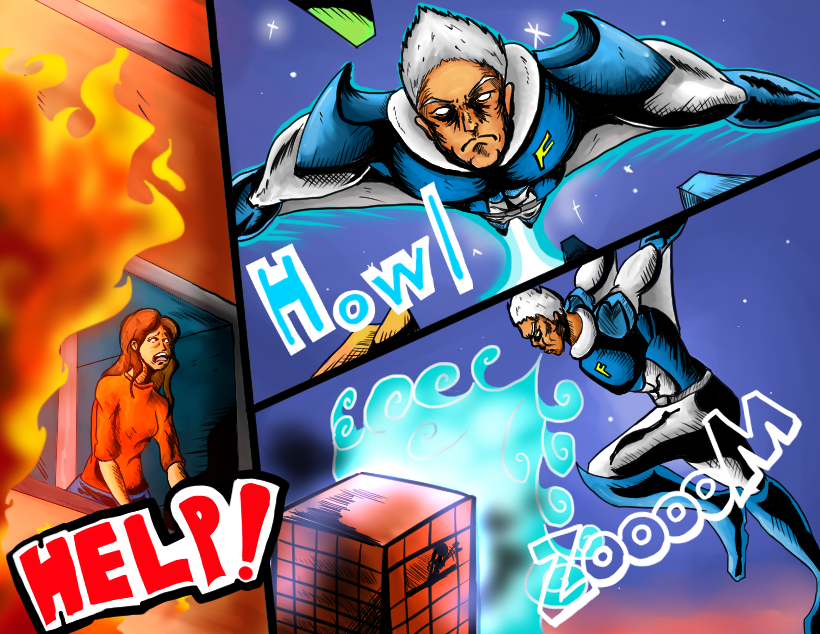

イメージイラスト
コンセプト
冷たい息で吹き消すので見た目は極寒でも耐えそうな氷山をイメージしたキャラクターデザインにしました。
作成した感想
得意な絵柄がしっかり活かせれてとても良かったです。吹き消すポーズは意外苦戦しました。ヒーローらしい消し方を試行錯誤してなんとか出来上がりました。
冷たい息で吹き消すので見た目は極寒でも耐えそうな氷山をイメージしたキャラクターデザインにしました。
得意な絵柄がしっかり活かせれてとても良かったです。吹き消すポーズは意外苦戦しました。ヒーローらしい消し方を試行錯誤してなんとか出来上がりました。